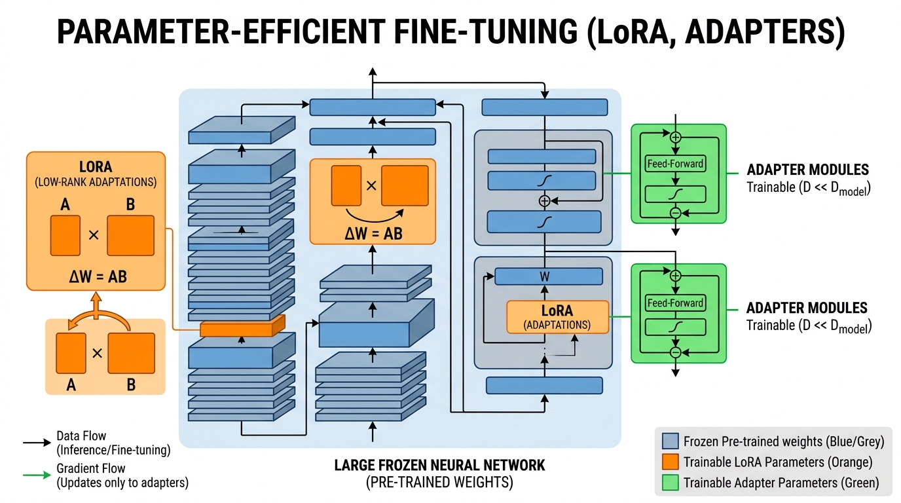

"The best parameter is the one you don't have to train."
LoRA AI Agent

Chapter Overview
Full fine-tuning of a 7B parameter model requires about 14 GB just for the weights in FP16, plus optimizer states that push the total past 56 GB. For most practitioners, this puts full fine-tuning out of reach without expensive multi-GPU setups. Parameter-efficient fine-tuning (PEFT) methods solve this problem by training only a tiny fraction of parameters (often less than 1%) while achieving quality that rivals or matches full fine-tuning.
This chapter covers the most important PEFT techniques in depth, starting with LoRA and QLoRA (the dominant methods in practice) and extending to newer approaches like DoRA, LoRA+, and adapter-based methods. You will learn not just the theory behind each method, but also how to configure hyperparameters, select target chapters, and merge adapters for efficient deployment.
The final section surveys the rapidly evolving ecosystem of training platforms and tools, from Unsloth (which delivers 2x speedups with half the memory) to managed platforms like Axolotl and LLaMA-Factory. By the end of this chapter, you will be able to fine-tune any open-weight model on a single consumer GPU.
Full fine-tuning is expensive and often unnecessary. Parameter-efficient methods like LoRA and QLoRA let you adapt large models by training only a small fraction of their parameters, dramatically reducing compute costs. These techniques make fine-tuning accessible even on consumer hardware, a practical skill used throughout Parts V and VI.
LoRA is the Marie Kondo of machine learning: it looks at your 7 billion parameters and asks, "Do all of these spark joy?" Then it politely freezes 99% of them and trains a tidy little matrix that somehow does nearly the same job. Your GPU has never been so relieved.
Prerequisites
- Chapter 14: Fine-Tuning Fundamentals (supervised fine-tuning workflow, data preparation, evaluation)
- Chapter 09: Inference Optimization (quantization basics, GPU memory concepts)
- Chapter 04: The Transformer Architecture (attention mechanism, weight matrices)
- Familiarity with PyTorch training loops and the Hugging Face Transformers library
- Basic linear algebra (matrix multiplication, rank of a matrix)
Learning Objectives
- Explain the mathematical foundation of LoRA, including the low-rank decomposition W' = W + BA and why it works in transformer weight matrices
- Configure LoRA hyperparameters (rank, alpha, target chapters, dropout) for different model architectures and task types
- Apply QLoRA with NF4 quantization, double quantization, and paged optimizers to fine-tune large models on consumer hardware
- Compare advanced PEFT methods (DoRA, LoRA+, Prefix Tuning, IA3, adapters) and select the right one for a given scenario
- Implement multi-adapter serving strategies using LoRAX or S-LoRA for production deployments
- Use modern training platforms (Unsloth, Axolotl, LLaMA-Factory, torchtune, TRL) to streamline the fine-tuning workflow
- Merge trained LoRA adapters back into base models and evaluate the merged result
- Select appropriate cloud infrastructure (Colab, Lambda Labs, RunPod, Modal) based on budget and scale requirements
Trying to fully fine-tune a 70B model on a single GPU is like trying to park an aircraft carrier in a residential garage. PEFT methods are the engineering equivalent of saying, "What if we just shipped the steering wheel and a few seats instead?" Somehow, the thing still drives.
Sections
- 15.1 LoRA & QLoRA LoRA mathematics (W' = W + BA), why low-rank decomposition works, rank and alpha hyperparameter tradeoffs, target module selection, QLoRA with NF4 quantization and double quantization, paged optimizers, adapter merging strategies, and the PEFT library.
- 15.2 Advanced PEFT Methods DoRA (Weight-Decomposed Low-Rank Adaptation), LoRA+, Prefix Tuning, P-Tuning, Prompt Tuning, adapter layers, IA3, multi-adapter serving with LoRAX and S-LoRA, and a decision framework for choosing the right PEFT method. Connects to alignment training workflows.
- 15.3 Training Platforms & Tools Unsloth (2x faster fine-tuning), Axolotl configuration-driven training, LLaMA-Factory web UI, torchtune from PyTorch, TRL for alignment training, and cloud compute options including Colab, Lambda Labs, RunPod, and Modal.
What's Next?
In the next chapter, Chapter 16: Distillation and Model Merging, we learn to create efficient, specialized models through knowledge distillation and model merging.